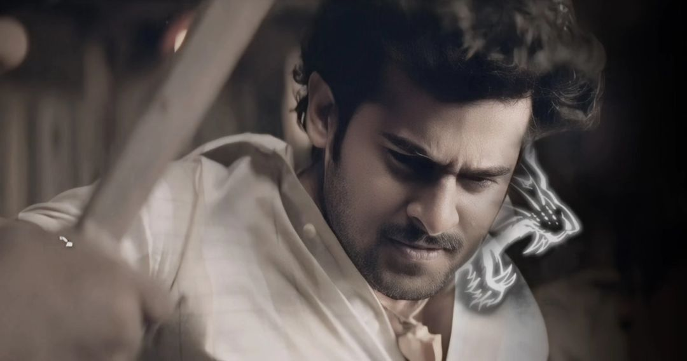

Salaar: Part 1 – Ceasefire is a 2023 Indian Telugu-language epic action thriller film directed by Prashanth Neel and produced by Vijay Kiragandur under Hombale Films. The film stars Prabhas and Prithviraj Sukumaran alongside Shruti Haasan, Jagapathi Babu, Bobby Simha and Sriya Reddy. In the fictional dystopian city-state of Khansaar, where constitutional monarchy still exists, the film follows the friendship between Deva (Prabhas), the exiled prince of Khansaar, and Varadha (Prithviraj), the current prince of Khansaar. When a coup d'état is planned by his father's ministers and his relatives, Varadha enlists Deva's help to become Khansaar's undisputed ruler. The film's initial storyline was pitched from Neel's 2014 Kannada-language debut film Ugramm and is the maiden part of a two-part film.[2] It was officially announced in December 2020 under the title Salaar, however, in July 2023, its first installment was titled as Salaar: Part 1 – Ceasefire. Principal photography commenced in January 2021, and occurred sporadically in several legs over nearly three years, before wrapping in late 2023. Filming locations included Telangana, Italy and Budapest. Production difficulties, ranging from the pandemic, reshoots and VFX delays, postponed Salaar's release date several times until being announced to be released on 22 December 2023. The music is composed by Ravi Basrur, cinematography handled by Bhuvan Gowda and editing by Ujwal Kulkarni.
Twinkle, twinkle, little star,
How I wonder what you are!
Up above the world so high,
Like a diamond in the sky.s

